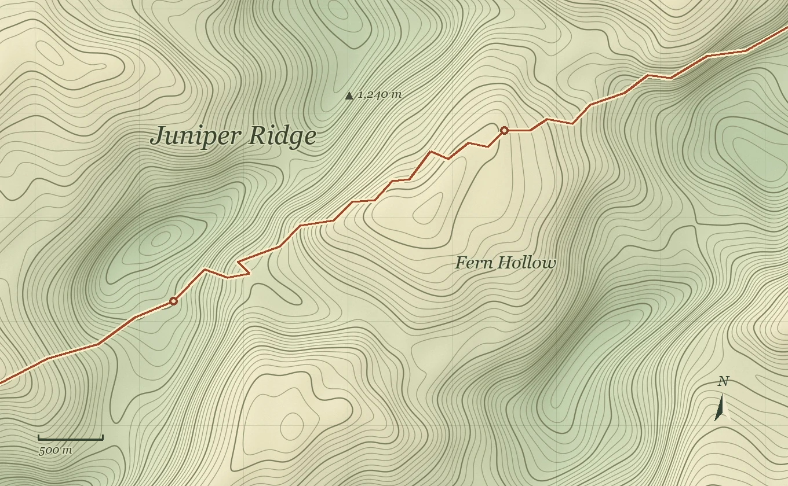

Walking journal / 08
A little room
A little room
to breathe.
Past the last switchback, the wind picks up and the trail goes quiet. An afternoon on Juniper Ridge.
Ridge soundscapeWind & birds · 0:14
